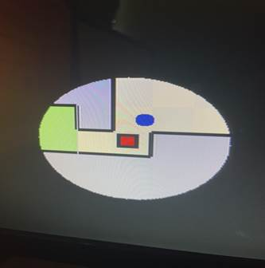

World's Hardest Game Acclerated on FPGA

The World's Hardest Game was originally a flash game created by Flash Games Studio using Adobe Flash Player, but was then redesigned by Stephen Critoph to be implemented on HTML5. We chose to recreate The World's Hardest Game on our FPGA since the game's design is not graphically intense. In the game, the playing character, represented by a red cube, must navigate through a maze to the end of the map while dodging moving obstacles. The maze provides specific paths that must be taken for the player to advance, while the paths may contain obstacles that will reset the player's position if a collision occurs. Once a player reaches the end, the next level loads and the player respawns at the new starting location. The game offers functionality to load specified levels before completing the previous level, and some levels have coins that must be collected before the player can continue to the next level.
Written
Description of The World's Hardest Game
Overview:
We were not able to find a Word's Hardest Game SystemVerilog implementation on the web, so we had to break the game apart into manageable interfaces that could be developed and tested independently from each other. We divided the game into three sections, the map interface, the obstacle interface, and the player interface. Each interface needed its own RAM block that it can access, so we decided to use a VRAM style configuration that we used in lab 7.Each map contains a 20x15 matrix of tiles that specify important game parameters like starting location, ending locations, restricted areas, and in-bound areas. Each tile is a square so a 20x15 map keeps a 20x15 aspect ratio. While developing our vga to text interface for Lab 7, we split the available VGA space (640 x 480 pixels) into an 80 x 30 character sprite matrix, with each sprite taking 8 x 16 pixels. We decided to use a similar platform for our maps with each sprite, now referred to as a tile, taking 32 x 32 pixels. This leaves us with the 20 x 15 matrix for our map interface. Each tile in the map also may have boundaries around the perimeter, which restrict player movement but does not restrict obstacle movement. Each tile can have up to four boundaries. It is also assumed that a tile having a left sided boundary, implies the left adjacent tile containing a right sided boundary. The memory layout scheme for a tile is depicted in the charts below.


White and gray tiles are in-bounds tiles, blue tiles represent the restricted areas, Start_Green tiles represent the starting/respawn locations, and End_Green tiles represent the end zone of the map; only 3-bits are needed to represent five different tile types. The boundaries are represented in the layout scheme by assigning four separate bits to represent an individual boundary. With only eight bits needed total to represent a tile, our mapping interface has a structure very similar to lab 7.1; the sprites are simply 32 x 32 squares instead of 8 x 16 characters. We do use significantly less VRAM than Lab 7.1, since we only need 75 addresses per level (with four 8-bit tiles per address). This way, our mapping interface is able to read the map data directly from the VRAM, by using the address generated by the values of the VGA horizontal and vertical counters (DrawX and DrawY). Once we converted DrawX and DrawY into linear style coordinates, we simply added the level offset value to generate the final read address as shown below.


Once the VRAM's output value is retrieved, it's divided into registers depending on which tile were retrieving data for. Once the boundaries and block code are stored in registers, they are sent to the “color_mapper” module to have to correct pixels displayed on the monitor. If DrawX and DrawY are within a two pixel threshold with the edge, and that edge contains a boundary, we print black; otherwise the blockcode is used to determine the tile's color. This method worked well for loading and displaying our maps as it's memory efficient and low latency.
The main inspiration we had to implement The World's Hardest Game on a FPGA, was lab 6 when we created a VGA interface to take a keyboard input and move a ball across the screen. The moving red ball reminded us of the obstacles in The World's Hardest Game, so we based our enemy module on “ball.sv”; this module originally based the ball's movement from keyboard input, which we had to change. We designated a RAM block to hold all the data all obstacles require. Since we have up to thirty two obstacles in one map, we needed to instantiate registers to hold all the obstacle data for one level; we used registers since we can't fetch all the data for the obstacles within one movement cycle. The memory layout scheme for an obstacle is depicted in the charts below.

Unfortunately, the Avalon Memory Bus (with the NIOS II CPU) is only 32-bits, which means we could only use a max data width of 32 bits. We designed all our coordinates (StartX, RangY, CenterX, etc) to use 10-bit values to cover the entire 640 x 480 resolution, unfortunately this was not memory efficient and required two different addresses to store the data for one obstacle. We added RangeY later in the project while implementing rectangular obstacle movement; since all obstacle movement is centered within a tile, we only needed to use 5-bits to store coordinates for tile-indexed coordinates rather than pixel-indexed coordinates. That is why RangY is only five bits while all other coordinate registers are ten bits. However, if we were to convert all our pixel-indexed coordinates into tile-indexed coordinates, we still can't fit an entire obstacle into one address. Upon loading a level, all the data has to be transferred from the obstacle RAM to the obstacle registers, which we implemented with a counter as shown below.

All obstacle data registers are two-dimensional unpacked arrays, with thirty two indexes for the top array. All thirty two enemy instantiations retrieve their data from these registers, which gets refreshed upon loading a new level. When a new level is loaded, a write-flag stops the enemies from moving so the new values can be written. Once the flag goes down, the enemies reset their positions to the new starting coordinates. Depending on the value of their movement register, they could move one of three ways, horizontally, vertically, or in a rectangular pattern. Horizontal and vertical movement was implemented the same way as in “ball.sv” in Lab 6; an “Xmotion” and “Ymotion” value toggles the enemy's position every clock cycle. We reverse the direction of the enemy once the enemy travels the length of the range. The rectangular movement is similar, but we use two separate ranges, a center position, and a direction value to travel a rectangular path. This platform gave us a controllable obstacle interface that worked very well.
Our player interface was also built upon “ball.sv” since the ball was controlled by keyboard inputs. We did have to change the shape of the player into a red square, add diagonal movement support, and add collision detection for walls and obstacles. In Lab 6, our NIOS II would run the USB drivers and SPI to send one keycode through our Avalon bus conduit. We doubled the width of the conduit to 16 bits and changed the “usb_input.c” to support two keycodes at once. When the keycode is received by the top level interface, it's sent to the player module to have the player's position updated, but only if the movement is valid, i.e, the player will not collide into another object. We used four registers to store the boundary information for the tiles that the four corners of the player resided in. We calculated the indexes of the four corner tiles with the always_comb block shown below.

The indexes of the corner tiles are then sent to the map VRAM manager because we need to store the boundary information for the corner tiles. We used an always_ff block to check and see if the map VRAM is reading a player's corner tile, if so, we store the value in the pertaining registers as shown below.

The player checks then checks to see if corner tiles contain boundaries in the direction it's trying to move using the logic below; this example checks for a valid left movement.
 .
.
If flag_x or flag_y is not set, the move is valid and the player's position is updated.
Collision detection between the player and the obstacles is done in the obstacle_controller module. The player's corner indexes and obstacle information is passed into the obstacle controller. Each individual obstacle checks to see if it touches any of the player's edges with the logic shown below.

If an obstacle detects a collision, the player is reset to it's starting position.
Block
Diagram
Top Level Module
WHG_final385.sv block diagram:
We found that lab 7 served as an excellent starting point for the implementation of our project. The ability to read data from memory then display it on a monitor through VGA was exactly what we needed. So unsurprisingly, our top-level block diagram looks almost identical to that of lab7.sv's block diagram.
[contents on next page]

vga_game_map_interface block diagram:
Our mapping interface for this project, unlike the top-level module, is considerably different from the module it was built from. A number of alterations were made to lab 7's vga_tex_avl_interface.sv, which is to be expected as our project goes much further beyond printing blocks of text to the screen. The most complicated parts of this file are the boundary
management, as seen
by the multitudes of layers in combinational logic involved in it. 
Half one of the module

And the second half
Module
Descriptions
.sv Modules
Top Level Module
Module: WHG_final385.sv
Inputs: MAX10_CLK1_50, ARDUINO_RESET_N,
[1:0] KEY,
[9:0] SW,
[15:0] DRAM_DQ, ADUINO_IO
Outputs: DRAM_CLK, DRAM_CKE, DRAM_LDQM, DRAM_UDQM, DRAM_CS_N, DRAM_WE_N, DRAM_CAS_N, DRAM_RAS_N, VGA_HS, VGA_VS, ADUINO_RESET_N,
[1:0] DRAM_BA,
[3:0] VGA_R, VGA_G, VGA_B,
[7:0] HEX0, HEX1, HEX2, HEX3, HEX4, HEX5,
[9:0] LEDR,
[12:0] DRAM_ADDR,
[15:0] DRAM_DQ, ARDUINO_IO
Description: This is the top level module of our design. It contains the submodule that runs our platform designer soc file WHG_final385soc.v.
Purpose: This module is used to plug in the inputs into our Platform Designer module and send the outputs of it to our FPGA board.
Remarks: The lab 7 top level module served as a good framework for what we wanted to accomplish, so we basically ripped this file from lab7 and applied it to our project.

A visual depiction of our top level
module design process
Module: vga_game_map_interface.sv
Inputs: CLK, RESET, AVL_READ, AVL_WRITE, AVL_CS, initialize_level
[3:0] AVL_BYTE_EN,
[10:0] AVL_ADDR,
[15:0] wasd,
[31:0] AVL_WRITEDATA,
Outputs: hs, vs,
[3:0] red, green, blue,
[31:0] AVL_READDATA
Description: This is a collection of the various submodules and inner-workings of the VGA Text Mode Controller. The following submodules are contained in this module: VGA_controller.sv, color_mapper.sv, obstacle_manager.sv, player.sv, and level_manager.sv.
Purpose: This
module is the synthesis file used to construct the VGA Game Map Controller in
our Platform Designer module, WHG_final385.v,
which our top level module uses to run the program.
Because we created a new but similar IP for our project, we figured a new but
similar synthesis file would be the best way to achieve our goal.
Remarks: The name of this module is suspiciously similar to that of the vga_text_avl_interface.sv used in lab7. But this was constructed entirely on our own for a new custom IP we created in Platform Designer shown below.

Module: color_mapper.sv
Inputs: blank, print_enemy,
[2:0] blockcode,
[3:0] boundaries,
[9:0] PlayerX, PlayerY, DrawX, DrawY, Player_size
Outputs: [7:0] Red, Green, Blue
Description: This is three always_comb blocks composed of if/else if statements that we use for printing using combinational logic.
Purpose: This module prints our level background, the obstacles, and the player by setting the RGB color values to be printed pixel by pixel. It receives data from the obstacle manager, the player module, and the tile data to decide what color to print by using combinational logic.
Module: sprite.sv
Inputs: [6:0] keycode,
[9:0] DrawX, DrawY
Outputs: flag,
[9:0] Sprite_X_Pos, Sprite_Y_Pos
Description: This module contains the font_rom.sv as a submodule and the code that handles the logic to print our characters.
Purpose: This module handles the logic used to print the characters to screen using the data from the font_rom.sv file and mirrors the order the pixels are printed in to ensure they show up properly on the screen.
Module: player.sv
Inputs: Reset, frame_clk, dead, new_level,
[3:0] tl_bound, tr_bound, bl_bound, br_bound,
[9:0] respawn_x, respawn_y,
[15:0] keycode
Outputs: [9:0] PlayerX, PlayerY, PlayerS,
[11:0] tl_indx, tr_index, bl_index, br_index
Description: This module is a series of always_comb and always_ff blocks that contain data pertaining to the player such as their speed, center positions, and corner positions.
Purpose: This module is how we control the player, print them to the screen, and check for collision against tile boundaries. Keycode from the usb controller is sent here and allows the player to move on the screen.
Remarks: The player module is simply an adapted ball.sv module from lab 6 with changes made to tailor it to our project.
Module: enemy.sv
Inputs: Reset, frame_clk, start_enemies, direction, enable,
[2:0] movement,
[3:0] speed,
[9:0] start_x, start_y, center_x, center_y, PlayerX, PlayerY, PlayerS, DrawX, DrawY, range, y_range
Outputs: collision, print_enemy
Description: This module is a player module that's been stripped of its keyboard control code and adapted to have objects move across the screen on a preset path.
Purpose: This module controls a single enemy on the screen, dictating its movement pattern, position, and whether or not it's to be drawn to screen. A signal that detects player collision is wired into the player module, which is used to simulate the player dying to an enemy. 32 of these things are used in total and are all instantiated in obstacle_manager.sv.
Module: obstacle_manager.sv
Inputs: Clk, pixel_clk, vs, RESET, AVL_WRITE, new_level, initialize_level
[3:0] AVL_BYTE_EN
[9:0] DrawX, DrawY, PlayerX, PlayerY, PlayerS,
[10:0] AVL_ADDR,
[31:0] AVL_WRITEDATA
Outputs: dead, print_enemy
Description: This module contains a counter, the enemy memory, enemy instantiations, and a series of combinational blocks that control these submodules.
Purpose: This module serves as the housing for all the modules that control our obstacles so we don't have to put them in vga_game_map_interface.sv (we don't have to generate an HDL everytime we make a change in this module that way). This module also loads the obstacle data from memory and loads it into each of the enemies.
Module: keydecoder.sv
Inputs: [15:0] keycode_in
Outputs: [15:0] keycode_out
Description: This module is a single always_comb block made up of if/else if statements.
Purpose: This module takes the two keycodes received from the keyboard and standardizes them into a single output. For example, diagonal movement to the top-right can be done by pressing W then A, or A then W. While these both have the same function, they are completely different 16-bit keycodes. This module ensures multiple keys being pressed at once will always return the same keycode regardless of what order they are pressed in.
Module: level_manager.sv
Inputs: Clk, RESET, AVL_READ, AVL_WRITE, AVL_CS,
[2:0] blockcode,
[3:0] AVL_BYTE_EN,
[10:0] AVL_ADDR,
[11:0] VGA_ADDR,
[31:0] AVL_WRITEDATA
Outputs: [31:0] AVL_READDATA, onchipq
Description: This module is composed of an always_ff block that allows us to cycle levels and the memory access submodule.
Purpose: This module controls which level we are on by offsetting the address the level data is read from and sending that input to memory_access.sv.
Module: memory_access.sv
Inputs: Clk, RESET, AVL_READ, AVL_WRITE, AVL_CS,
[2:0] blockcode,
[3:0] AVL_BYTE_EN,
[10:0] AVL_ADDR,
[11:0] VGA_ADDR,
[31:0] AVL_WRITEDATA
Outputs: [31:0] AVL_READDATA, onchipq
Description: This module contains the map memory that's stored on our FPGA board.
Purpose: This module contains the map memory that's stored on our FPGA board. It controls whether or not we are reading or writing to the memory by using an AVL_READ control signal received from level_manager.sv. It's how we get the memory to actually draw our map tiles onto the screen.
Module: VGA_controller.sv
Inputs: Clk, Reset
Outputs: hs, vs, pixel_clk, blank, sync,
[9:0] DrawX, DrawY
Description: This is a series of positive-edge triggered logic blocks that set the values of outputs vs, hs, blank, pixel_clk, DrawX, and DrawY
Purpose: This module controls the position of the electron gun on the VGA display, sets the horizontal/vertical sync pulses and blank output used in the color mapping process that follows in the color_mapper.sv module.
Remarks: We used the VGA_controller from lab 7. It's unchanged.
Module: map_memory.v
Inputs: clock, wren,
[3:0] byteena_a,
[10:0] rdaddress, wraddress,
[31:0] data
Outputs: [31:0] q
Description: The module is the resulting file from the program in Quartus Prime used to instantiate the 2-port RAM on our FPGA board.
Purpose: This module is the megafunction onchip ram configuration we use to hold our map data for all ten levels.
Module: obstacle_memory.v
Inputs: clock, wren,
[3:0] byteena_a,
[10:0] rdaddress, wraddress,
[31:0] data
Outputs: [31:0] q
Description: The module is the resulting file from the program in Quartus Prime used to instantiate the 2-port RAM on our FPGA board.
Purpose: This module is the megafunction onchip ram configuration we use to hold our obstacle data for all ten levels.
Module: HexDriver.sv
Inputs: [3:0] In0
Outputs: [6:0] Out0
Description: This module is a unique case statement within an always_comb block. There are 16 different cases, each one corresponding to a 4-bit number.
Purpose: We use this module to display our death count and the current level we are on.
Remarks: This module is the same one that we've been using all semester. It's unchanged from the version we were provided.
Module:
Inputs:
Outputs:
Description:
Purpose:
WHG_final385soc.v:
PIO Blocks
VGA_game_map_controller_inst: This block is the custom IP we adapted from the one used in lab 7. It is the primary component of the Platform Designer file generated for our Nios II system. It uses the vga_game_map_interface.sv file to implement the code that runs the IP block. In addition, it contains two new connections, wasd and initialize_level, which we implemented in our C code. Wasd is the 16-bit keycode received from the keyboard, and initialize_level is the signal our code first sends to the board when the game is loaded.

clk_0: This block is used to control the clock in our top level module. In Platform Designer, the frequency is set to 50 MHz.

nios2_gen2_0: This is our system's Nios II processor. It's essentially the brain of the code we write in Eclipse. Without it, we can't do any of the data manipulation and I/O tasks that our C code is written for.

sdram: The controller for the SDRAM. It handles the maintenance associated with refreshing SDRAM and holds most of the data addresses we modify in this project. It essentially acts as the steward for our device's memory.

sdram_pll: This block is where we instantiate the second clock c1, which is set to a -1ns offset from c0. This is done to correct for any clock skew that occurs in our project due to the board layout.

keycode: This block is where the 16-bit keycode received from the keyboard is stored. We then plug this into the wasd input in the VGA_game_controller block. Keycode was expanded from 8-bits to 16-bits in order to allow for diagonal movement.

usb_irg/gpx/rst: These are the usb modules from lab 6.2 that allow us to control the player using keyboard input. There isn't much to say on these blocks, we implemented them as instructed in 6.2 and didn't change them in any other way.
initialize_level: This block is a 1-bit PIO input we use for our initialize level signal in the C code. It plugs into the VGA game controller and lets the system know when the game has been started.

timer: This block sets the delay that most usb drivers need in order to run properly. Without it, our usb keyboard likely wouldn't function.
Design
Resources and Statistics
|
LUT |
15170 |
|
DSP |
390 |
|
Memory
(BRAM) |
119808 |
|
Flip-Flop |
4786 |
|
Frequency |
144.84
MHz |
|
Static
Power |
96.18
mW |
|
I/O
Power |
9.31
mW |
|
Dynamic
Power |
0.72
mW |
|
Total
Power |
96.18
mW |
Our memory design process was sort of like a half step between lab 7.1 and 7.2, using an excessive number of registers for our enemies and efficiently loading our data into specific memory modules on the FPGA board. While there were probably better methods of storing our enemy data, using individual registers wasn't as cumbersome as in lab 7.1 (32 registers as opposed to 600). We chose to go for a straightforward implementation since it's what we knew would work at that time, and it made sense to have each dynamic entity have its own register that could be written into/read separately from others.

There's 30 more instantiations of this not shown
Each compile took around 3 minutes to complete, which wasn't as bad as the 10+ minute compiles in lab 7.1, but it's time lost that could've been spent doing more debugging.
Features
Baseline
●
3 levels with increasing levels of difficulty
We managed to go above and beyond in this aspect and put together a total of 10 levels! The process of level design was expedited by the creation of a macro in Microsoft Excel that would allow us to visually alter the level then export the data from the cells into a string of HEX numbers that would go into the level data array in our C code. An example of level 1 along with the level editing UI is shown below along with some of our favorite level designs.

Working with
this isn't very fun
So we decided to do it visually
instead!
Level
5:

Level 7:

Level 10:

● USB controller/keyboard support
For this, we decided that only keyboard support was all that was necessary since that's what the original game was compatible with. We used the code from usb_kb's main.c file in lab 6 as the starting point for our keyboard controls. However, this required minor alterations since the keycode PIO block in Platform designer was only 8 bits, restricting us to movement on one axis at any time. Expanding the keycode to 16 bits and making the necessary alterations allowed our program to hold enough data to receive input from two keys at a time, allowing for diagonal movement!


Keycode's input size needed to be doubled from 8 to 16 bits
●
Dynamic obstacles
This part of the project took a lot of adjustments to get working. While hardcoding the pathing and displaying the obstacles to the screen was easy enough, the real challenge came in storing the obstacle data for each level into memory and successfully loading it. More importantly, since every obstacle needed 64 bits of data for 10 separate levels, we needed a more user-friendly means of setting the parameters of each enemy. To do this, we once again made another excel spreadsheet that would take the inputs from the cells of all 32 enemies and output them as a string of HEX numbers.

Our obstacle creation program. Every level technically had 32
obstacles that could be enabled or disabled.
Each enemy had seven parameters that needed to be set:
● Start x: the x-coordinate of where the obstacle first initially
appeared on that level
● Start y: the complimentary y-coordinate of
start x
● Enable: this determined whether or not this
obstacle would be present in this level. Setting this to 0 would disable the
obstacle, preventing it from being drawn to the screen or killing the player.
● Range: the number of pixels an enemy would move in its movement pattern
before returning back to its original position
● Movement: this is the pattern of movement that an obstacle would be
assigned to. It determines how each enemy moves on the screen in a level. The
patterns are determined by 3-bit numbers as follows:
○ 3'b000: linear movement in the x-direction. The obstacle will travel
[range] pixels away on the x-axis
before reversing direction and returning to its start point.
○ 3'b100: linear movement in the y-direction, complimentary to the
x-movement pattern
○ 3'b001: square movement. The obstacle would travel in a square
pattern starting at the top left corner. Each side of the square path is equal
to the obstacle's range parameter.
● Direction: this parameter is essentially a ‘reverse direction' modifier
to the obstacle's movement pattern. If set low, the obstacle will move in the
direction opposite of an identical obstacle set to movement high.
● Speed: this parameter sets the obstacle's step magnitude.
Essentially, this is the number of pixels the obstacle will travel for every
clock cycle of vs. For comparison,
the player's speed is set to 2.
●
Fail Count: originally, we planned for this to
be displayed in the top left corner of the screen. But we decided to make use
of the HexDriver modules we were provided throughout
the semester and use them to display the player's death count on the two
rightmost hex LEDs. Everytime the player gets hit by
an enemy, this counter increases by one. When the game is reloaded or the RESET
signal is received, the counter reverts to zero.
●
Edge detection collision:
This was by far one of the most complicated parts of our game. Our method for detecting collision was to keep track of the tile index each of the player's corners were in. Then our program would figure out the blockcode pertaining to the tile each corner is in. If that corner was at an edge pixel of a tile and the movement input would cause the player to cross into another tile that had a boundary on that side, a flag would trigger, blocking the player's movement in that direction.

● We had two separate flags, one for the x and one for the y-axis. This allowed collision to block movement in directions separately.
● Checking by corner position meant that we would only have to check three corners of the player at most. Since if the player is moving diagonally, the corner in the opposite direction of the player's movement couldn't violate a boundary before any of the other corners.
○ Unless the player was sitting inside a boundary, in this case, we decided to be nice and allow the player to slide through boundaries anyways to solve any possible issues with getting stuck on boundary lines.
● There was likely a better method to go about this, especially since we ran into the issue of being able to squeeze through boundaries by threading the needle on corner pixels on boundaries.

At the end of
the always_ff block for the player's movement, we
check if any flags have been set high. If so, we prevent the player's position
from changing in that direction.
Proposed Additional Features
Unfortunately, we were unable to implement any of the additional features we had proposed, as our baseline features took much longer to implement and polish than we first expected. However, some of these features we already have ideas for how we would implement.
●
Level Selection with time trials mode
The level selection feature would allow the player to select and load into a level, likely chosen by flipping one of the ten switches and pressing the load button on the FPGA. A series of case statements would then decide what address offset to send to both the level map and obstacle manager to load the appropriate data for that level. However, our problems with loading the correct obstacles for each level only returned when we decided to use a variable offset for our addresses.
As for the time trials portion of the feature, we intended to display a timer in the top left corner of the monitor that would tick upwards. A goal time would be displayed below that timer, and if the player failed to reach the goal by the time the timer ran out, the program would terminate, simulating a game over.
●
Sound effects
This would have been done using the audio interface port as described by Doctor Cheng in the lectures. But due to time constraints and our lack of previous experience interfacing audio in Quartus, we decided to scrap this feature.
●
Flashlight mode
In hindsight, this feature could have been implemented fairly easily. All it would have taken was an additional always_comb block in color mapper to detect if a pixel is within a certain radius of the player's center. If it isn't, the color mapper would just make the pixel black. This would mean only the pixels that are of a specified radius around the player would be printed.

A basic means of
creating a flashlight effect around the player.

The result of
the flashlight code
●
Pause Menu
We could have assigned a keycode to switch off the clocks for the player module and the obstacle_controller. From here we could add a text interface that could have displayed the individual levels and load them with the number keys. We could also overlay the menu over the paused game by setting the background of our text sprites to be the game's original VRAM, obstacles, and player.
●
Co-op mode
We could have
instantiated two separate players to be controlled by a different set of
keyboard inputs (like the arrows instead of WASD). We would also have to extend our 16-bit
keycode to be a 32-bit keycode, to support diagonal movement between both
players. Adding blocks to be pushed
around by both players would require a new interface and a more complex edge
detection method, which would have taken a lot of time to implement.
Conclusion
Looking back at our proposal, our expectations could have been reeled back a little. While the expectations for the baseline of our project were reasonable, the numerous additional features we proposed were a little excessive. What held us back the most from achieving everything we set out to do was how much time we spent on object collision and figuring out how to properly store and load our obstacles from memory. The baseline features themselves are what we underestimated how long it would take to develop, which is a strong lesson we both learned for project development in the future. System Verilog is quite a raw means of designing a game, and should have been considered when we used a game designed in Flash to create our timeline. Without a development engine, you're mostly stuck on your own in getting things to work and optimization.
Our strongest takeaway from this project is that the earliest parts of the project can oftentimes be the hardest parts. Likely what would've helped us the most is breaking up our baseline features into smaller parts to give us a better understanding of the scope of our goal.